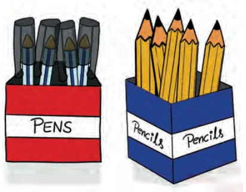
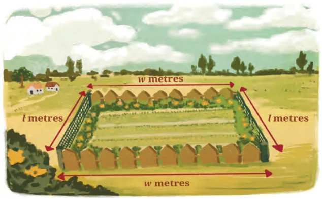

We have learnt about algebraic expressions in earlier grades. In this chapter, we will learn about the special types of algebraic expressions called linear polynomials. Let us first consider a few examples of algebraic expressions.
Example 1: Raju went to a shop where there were sealed boxes of different colours on sale. The shop owner told him that the red boxes have 4 pens each and the blue boxes have 5 pencils each. Now, if Raju bought \(x\) red boxes and \(y\) blue boxes, how can he quickly figure out the total quantity of pens and pencils? Also, if he got 3 extra pens free, how many pens and pencils did he get altogether?

Observe that \(x\) red boxes will have \(4x\) pens and \(y\) blue boxes will have \(5y\) pencils. Also, he got 3 extra pens free. Thus, the total number of pens and pencils is given by the algebraic expression \(4x + 5y + 3\). In this example, \(4x\), \(5y\) and 3 are terms of the expression, \(x\) and \(y\) are letter-numbers, the numbers 4 and 5 are the coefficients of \(x\) and \(y\), respectively, and 3 is a constant. From now onwards, we will use a widely used alternate word for letter-numbers: variables. Thus in the expression \(4x + 5y + 3\), we say that the variables used are \(x\) and \(y\).
Example 2: A rectangular garden of length \(l\) metres and width \(w\) metres has to be fenced and decorated. A wire fence is to be laid along the length costing ₹100 per metre and a wooden fence is to be built along the width costing ₹80 per metre. Special seeds have to be sown throughout the garden which will cost ₹50 per square metre.

What will be the total cost incurred?
Cost of wire fencing along the garden length \(= 2l \times 100 =\) ₹\(200l\)
Cost of wooden fencing along the garden width \(= 2w \times 80 =\) ₹\(160w\)
Cost of sowing seeds throughout the entire garden (depends on the area) \(= 50 \times l \times w =\) ₹\(50lw\)
Total cost = ₹\((200l + 160w + 50lw)\).
Thus, \(200l + 160w + 50lw\) is the algebraic expression for the total cost.
Think and Reflect
- Can you identify the terms, variables and coefficients of this algebraic expression?
- How is it different from the algebraic expression in Example 1?
Example 3: A wire of length 20 cm is bent in different ways to form rectangles. For example, we can have a rectangle with length 7 cm and width 3 cm. We can also have one of length 5.5 cm and width 4.5 cm. (Think of a few more ways of forming such rectangles.) Can you write an expression for the area of such rectangles?
If the length of the rectangle is \(x\) cm, then the width is \((10 - x)\) cm. The expression for the area of these rectangles is \(x(10 - x)\) or \(10x - x^2\).
Think and Reflect
- Can you identify the terms, variables and coefficients of this algebraic expression?
- Can you point out any similarity or difference between the algebraic expressions obtained in Examples 1 and 3?
Note that the algebraic expressions in Example 1 and Example 2 involve two variables, whereas the algebraic expression in Example 3 involves only one variable.
Expressions such as \(4x\), \(x^2 + 1\), \(2y - 5\), \(5y^3 + y^2 + 2y - 1\), \(3z + 7\) are algebraic expressions that involve only one variable: \(x\), \(y\) or \(z\). In this chapter, we will restrict our discussion to algebraic expressions involving only one variable. You may have noticed that in an algebraic expression, the powers of a variable also appear. For example, in the expression \(x^2 + 5x + 1\), the highest power of \(x\) is 2, whereas in the expression \(5y^3 + y^2 - 8\), the highest power of the variable \(y\) is 3. Further, in the expression \(5y^3 + y^2 + 2y - 1\), the coefficient of \(y^3\) is 5, that of \(y^2\) is 1, that of \(y\) is 2 and the constant term is \(-1\). Such algebraic expressions involving one variable and its powers are called one-variable polynomials, univariate polynomials, or when the context is clear, simply polynomials. ('univariate' means 'having one variable'). The highest power of the variable in a polynomial is called its degree. For example:
- \(5y^3 + y^2 + 2y - 1\) is a polynomial of degree 3. Such polynomials are called cubic polynomials.
- \(x^2 + 5x + 1\) is a polynomial of degree 2. Such polynomials are called quadratic polynomials.
- \(3z + 7\) is a polynomial of degree 1. Such polynomials are called linear polynomials.
- The constant 8 is a polynomial of degree 0 as it can be written as \(8x^0\) in which the power of the variable \(x\) is 0. Such polynomials are called constant polynomials.